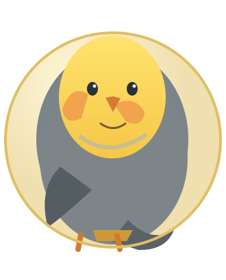

GLOBO MECÂNICOVisão direta do interior · 60 dezenas

PEPITO · A CALOPSITA DA SORTE
As bolinhas circulam dentro da esfera. Observe os números passando!
PRONTO PARA GIRARVelocidade: 0%
A parada pode ser manual. O tempo do toque não altera a chance de cada dezena.
Dezenas extraídas
—
—
—
—
—
—
0 de 6 dezenas